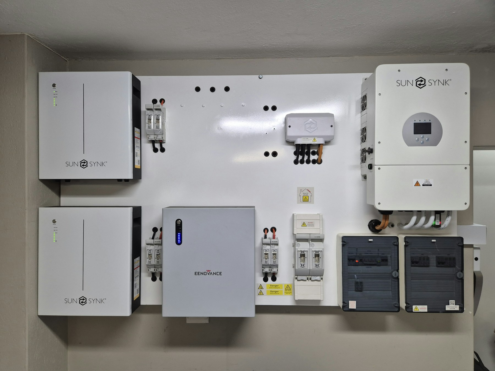

Der polnische Nationalfonds für Umweltschutz und Wasserwirtschaft NFOŚiGW öffnete vom 8. bis 19. Juni 2026 erneut die Antragsrunde für Photovoltaikanlagen und Batteriespeicher für Wohnhäuser. Am Veröffentlichungstag dieses Artikels ist das Antragsfenster bereits geschlossen.

Was kündigte der NFOŚiGW genau an?
In seiner Mitteilung vom 2. Juni 2026 informierte der Fonds über die erneute Annahme von Anträgen im Rahmen einer Investition zur Förderung kleiner Photovoltaikanlagen und Batteriespeicher für Wohnhäuser. Das zusätzliche Budget betrug 105 Millionen zł und stammte aus dem polnischen Aufbau- und Resilienzplan KPO.
Nach den vom NFOŚiGW genannten Daten waren im ersten Zeitraum bis zum 8. Mai 12.738 Anträge eingegangen, die 67,39 Prozent des verfügbaren Budgets beanspruchten. Diese Werte beschreiben die vom Fonds Anfang Juni gemeldete Situation – sie sind keine Prognose für eine spätere Antragsrunde.
Unterzeichnen Sie keinen Vertrag allein aufgrund der Aussage, dass „die Förderung bald startet“. Prüfen Sie zuerst die offiziellen Bedingungen, Termine, förderfähigen Kosten und den Zeitpunkt, ab dem Ausgaben zulässig sind.
Kann heute ein Antrag gestellt werden?
Nicht im Rahmen des hier beschriebenen Juni-Fensters – es endete am 19. Juni 2026. Der Status von Programmen kann sich ändern. Prüfen Sie daher vor einer Entscheidung die Website des Programmträgers und nicht nur einen Artikel, eine Werbung oder eine frühere Mitteilung.
GreenExperts kann bei der Prüfung aktueller Finanzierungsmöglichkeiten unterstützen. Die endgültige Bewertung des Antrags und die Vergabe der Mittel liegen jedoch bei der zuständigen Institution. Fördermittel sollten nicht als sichere Einnahme in das Budget eingerechnet werden, solange nicht alle Bedingungen erfüllt sind.
Was sollte vor einer neuen Antragsrunde vorbereitet werden?
Auch ohne aktives Antragsfenster lassen sich die Daten für ein gutes Projekt vorbereiten. So muss die Entscheidung nicht überstürzt werden, nur weil eine Runde kurze Fristen hat.
- Rechnungen und Stundendaten – sie helfen, PV-Leistung und nutzbare Speicherkapazität auszulegen.
- Angaben zur bestehenden Anlage – Wechselrichtermodell, Modulleistung, Schutztechnik und Schaltplan, falls ein Speicher später ergänzt werden soll.
- Ziel des Speichers – Eigenverbrauch, Nutzung eines Tarifs oder Notstromversorgung ausgewählter Stromkreise.
- Eigentums- und Abrechnungsunterlagen – der genaue Umfang hängt vom jeweiligen Programm ab.
- Angebotsvergleich ohne Förderung – die Investition sollte auch dann technisch sinnvoll sein, wenn Unterstützung nicht verfügbar ist.
Zuerst das Projekt, danach das Förderprogramm
Förderbedingungen können sich schneller ändern als die Lebensdauer der Geräte. Grundlage sollten daher eine richtig ausgelegte Anlage, kompatible Komponenten, sichere Montage und eine realistische Nutzung sein. Eine Förderung kann die Wirtschaftlichkeit verbessern, korrigiert aber keine falsche Auslegung.
Quelle
Informationsstand: 27. Juli 2026. Der Artikel ist weder eine Programmrichtlinie noch eine Garantie für den Erhalt von Fördermitteln.